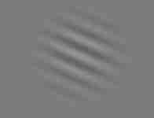

-
 BlackSides - Browser extention adding black side stripes to websites
[JS] source
BlackSides - Browser extention adding black side stripes to websites
[JS] source
Firefox addon creating black vertical stripes to isolate reading area for less eye strain
-

- Some ideas to spare\/
- [App] During recording normal video you can toggle slow motion for couple of seconds
- [Service] Middleware between buying and payment transaction system, which transforms part of actual payment to chosen charity.
- [Gear/App] Physical or software trackball for bigger phones
- [Browser Extention?] "TL;DR" - Crowdsourcing text sumups of every article or video added to webpage while viewing it
- [App?] Wrap-up of information if something significant changed in any installed app after auto update
- [Neural Networks] Music style transfer (like Artistic style transfer)
- Phone keyboard app which also suggests synonims
Here are some ideas someone might find interesting to develop